Zine Project – Final Work
Below is the work students submitted for the midterm. (You can view the full assignment description here.) Each student conceived, authored, designed, printed, and produced the very first issue of a zine. Their starting point was defining a specific distribution method for a specific audience in a specific time and place, and determining the content and concept from there. Through subject matter, voice, tone, brand, and means of distribution, the final product needed to evoke a certain tone, personality, set of values, and perspective. It could be any size, but had to be bound in a single signature, printed in black and white ink, and include: a cover, a masthead, an editor’s letter, a front-matter article, a feature article, and a back-matter article. Three copies needed to be produced.
between me and you,
By Alice Ly
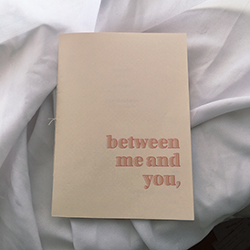 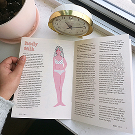 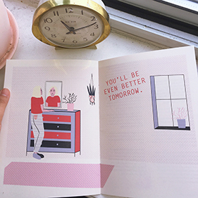'between me and you,' is a zine of three, short personal essays about being under pressure, body image, and bad relationships. The zine will be mailed to a three friends who have been struggling with problems that I cannot relate to. It isn’t my place to tell anyone how to handle their feelings so I can only hope this piece of personal writing and self reflection can help in some sort of way.
The masthead gives credit to the illustrator who contributed and an editor (who I owe many, many thanks to). Each illustration references a friend, or is of a friend who will be receiving the zine.
The colors of the zine reflect the quiet, personal space where people feel all the feels by using shades of pink, blue, periwinkle, red, and tan. The colors are emotional and loud. When lightened they’re quiet and present. The text is laid out in columns and short paragraphs to make it quick and easy to read, similar to a newspaper. To differentiate the editor’s letter from the content, a pale yellow background color is applied and monospaced typeface is used. For the body, serif type is used because it’s mostly a literary read.
It is printed on an off-white, matte paper that appears to have pink undertones to tone down the shades of pink in the illustrations. I hand sewed the zine with a three hole pamphlet stitch and handmade envelopes to emphasize that this is a keepsake made only for this small group of people. The back cover ends with, 'there are more than words.'
SKIN
By Bola Fashogbon
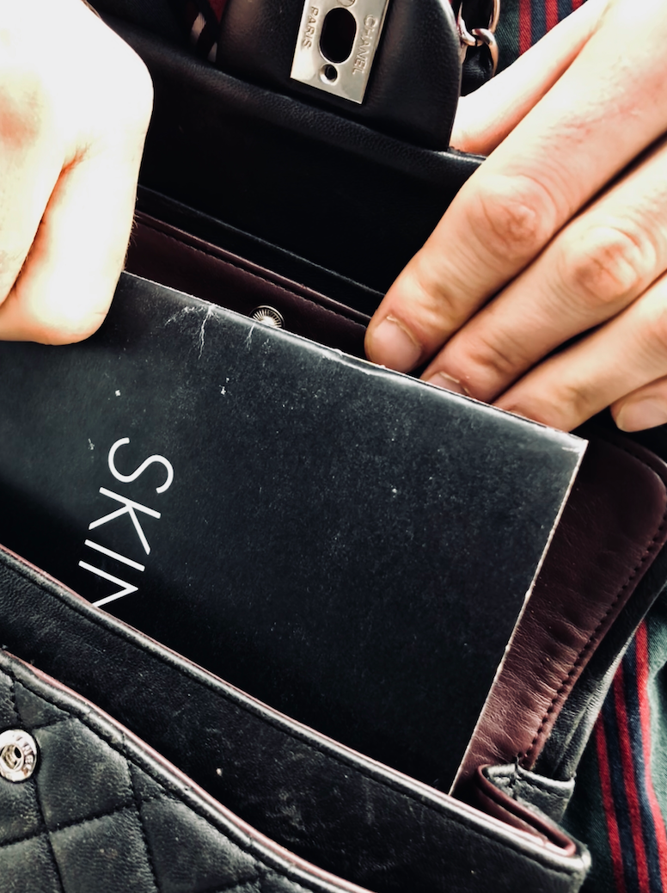 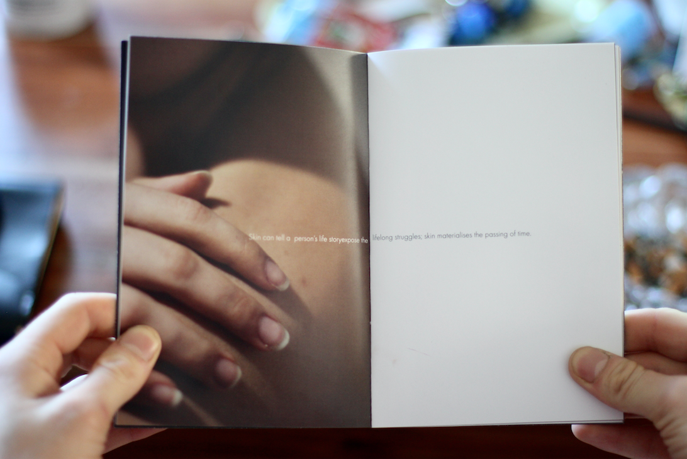
SKIN would be part of a collection of zines, titled ANATOMY. The overarching goal of the collection is to inspire new ways of seeing and understanding the human body. Each week focusses on a different part of the body, with the aim to produce a collection that encompasses the entire body. This edition, the first, focuses on skin. The zine is a weekly zine because the idea is that it would be part of a collection that covers the whole body, so it needs to be produced fairly frequently. The goal of the zine is to provoke a consideration of how the reader understands the organ, so it would be distributed in public spaces, such as cafes or the UC dining dining hall, places where you can sit down and read through it but are also around other people, so you would be around different types of the body part being discussed in the zine. The zine begins with an introduction to the entire collection and the topic being discussed in this particular issue and ends with a 'sneak peak' into next week's issue. I wanted a very clean and simple layout for the zine, so I chose Futura PT. It is printed on glossy paper and saddle stitched. The only colour in the zine comes from the images, which are fairly warm toned because, while I wanted the zine to have a very clean look, I didn't want it to feel sterile.
Life Changing Music
By Daria Harper


Life Changing Music is a zine about the power that music has and the lasting impact that it leaves on our lives. The front cover of this zine is simple, yet bold since I used a black as the color. I chose to use Cooper Black as the main/recurring font for the zine because I love the retro design feel that it creates. This type makes a strong focal point for the front cover. The back cover is quirky and features an image of Garfield the Cat. I chose to use this cartoon as my back cover because the font used for Garfield was originally Cooper Black. As I was researching famous design or ads that used Cooper Black, I found Garfield and thought it would be fun to add. Dylan also mentioned that back cover is a space to have a bit of fun.
The masthead of my zine includes me and one other contributor as a creative consultant. I have short interviews with people, but aside from those I wrote and designed everything. The editor’s letter for my zine is straight-forward and invites readers of the zine to reflect on their own experiences that relate to the topic of this zine. I think that you can learn a lot about someone and spark great discussion by learning what music has shaped and greatly influenced them. The ‘front matter article’ for this zine will be a short blurb/reflection about the importance of art and music that changed my life in some way. In this essay, I share a bit more about the music that has been life-changing to me.
Rather than one feature article and one back matter article, my zine includes three separate interviews where people explain a song or album that changed their life. Each of the three interviews varies in length and includes a sort of intro page that introduces the Interviewee and the song that they chose to share. I want this zine to be distributed at a park, because people like to read at the park and it would be fun to offer park attendees something to enjoy while they relax.
Color
By Eva Rudman
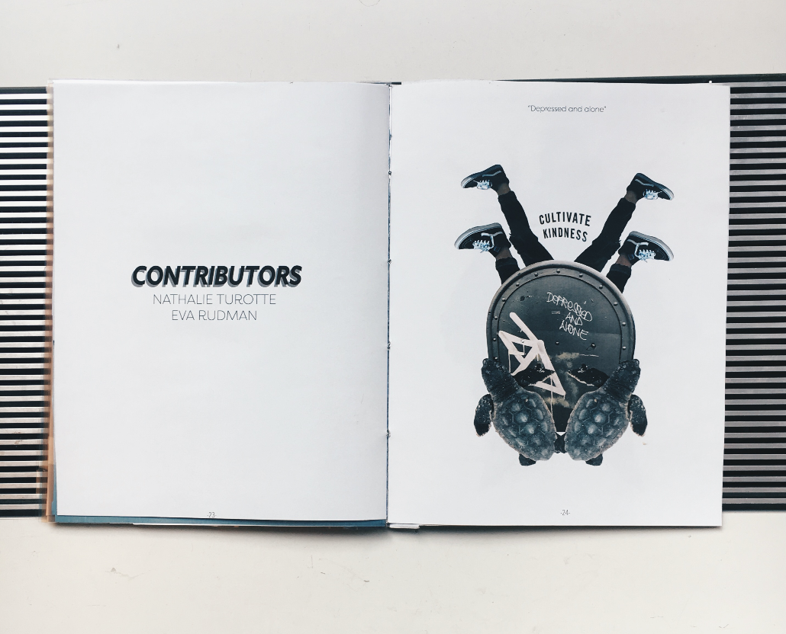 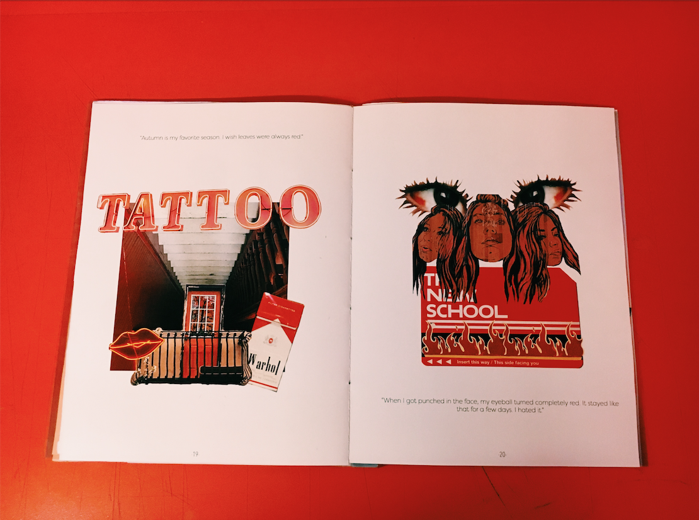
My magazine is about color and the inspiration it creates in our day to day life. Often, we overlook things we see as “mundane” or “every day items” but sometimes the best inspiration can be pulled from the things we most commonly overlook. I’m doing this by creating color cohesive collages out of images me and my friends have taken. I want my project to motivate people to pay closer attention to their surroundings and I think I can do this by having people look out for colors. My target audience are NYC creatives. As this idea develops, I would like to feature only pictures from certain areas. Then I would distribute the Zine in high traffic parts of each area. For example, one issue would only feature images from East Village and I would distribute it to people living in that area. As this idea expands, the amount of colors featured and places explored would expand as well. My visual design is pretty structured. Each color spread should have an identical layout, the only difference being the collages themselves. My front and back cover would be a made out of a reflective material. This would create a cover that is always changing and different for everyone.
Color Me Happy
By Gia Giampino
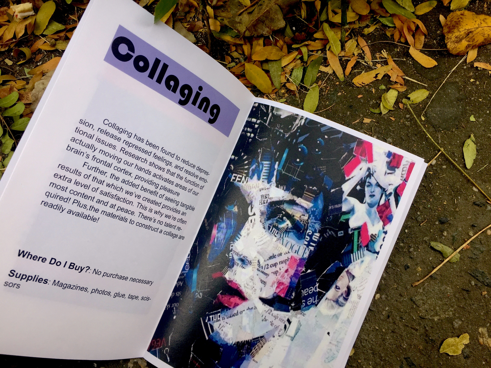 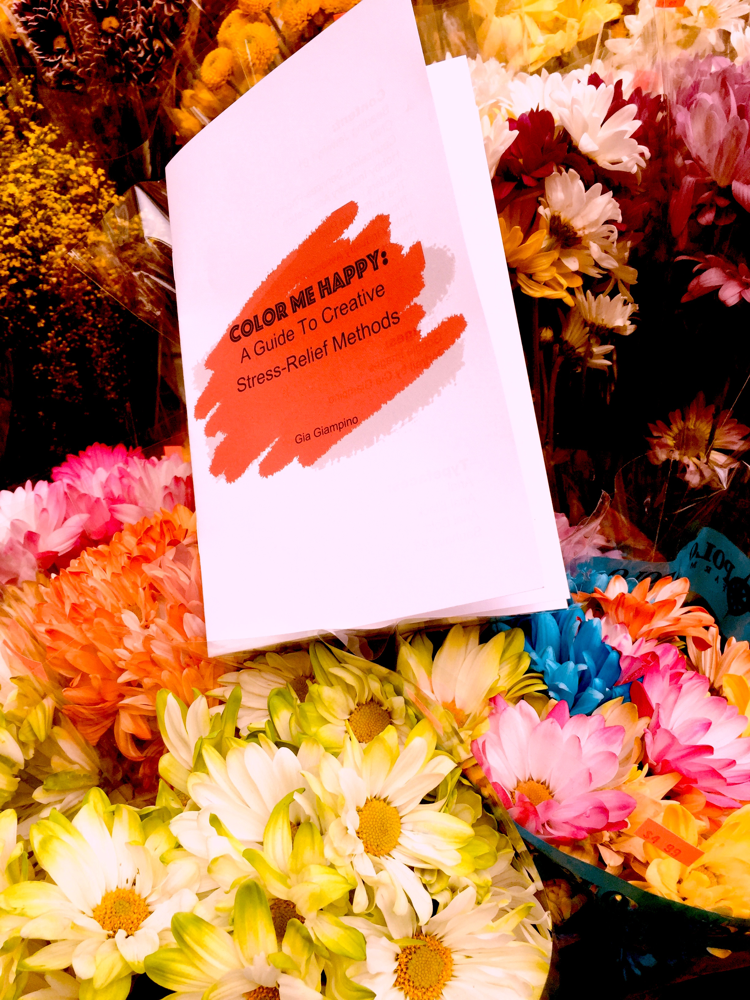 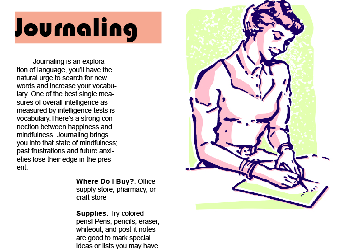Color Me Happy is a zine focused on highlighting how arts and crafts are great tools to help decompress when you’re feeling overwhelmed. This zine is for people who are stressed. The zine will be a collection of different craft projects, tools, supplies, lists, and ideas of creative projects . This will be distributed this in the lobby of the University Center of The New School, because it gets a ton of foot traffic and it also has a lot of students waiting around. The ideal timeframe would be in the evening when people have presumably had a long and tiring day and needs a pick-me-up or an activity to do on the commute home.
The masthead will credit the creator, images, content and article sources. The front cover is a photo of paint strokes with a simple title in the middle. The editor’s letter is a brief paragraph giving my POV on the zine. The back cover is a portrait I drew. The front matter article speaks about the benefits of creative activities/ art therapy. The back matter article is about how crafting/art therapy techniques can help to heal mental/ overall health burdens. Since this zine is set up almost like an index/list, there is not really a feature article. This zine tries to evoke a light and happy feeling, taking advantage of color and space. Each page has a bold header within a color block. Each spread is comprised of one page with text content and the opposite page with a full bleed image. The color blocks that envelope each title, are in some way matching colors of the accompanying image.
Peace of Cake
By Ivy Schneider
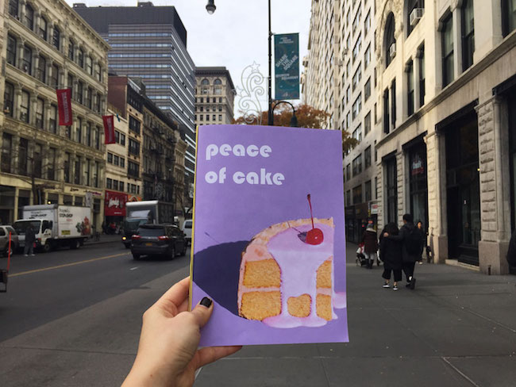 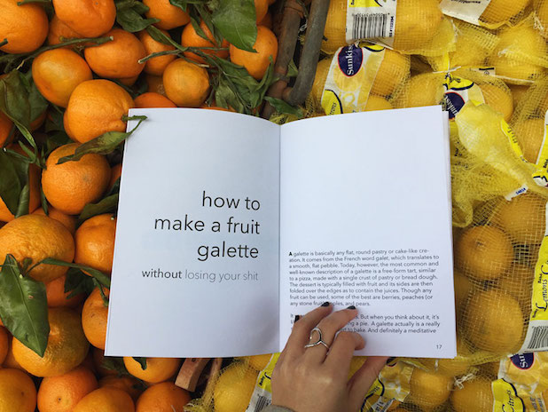 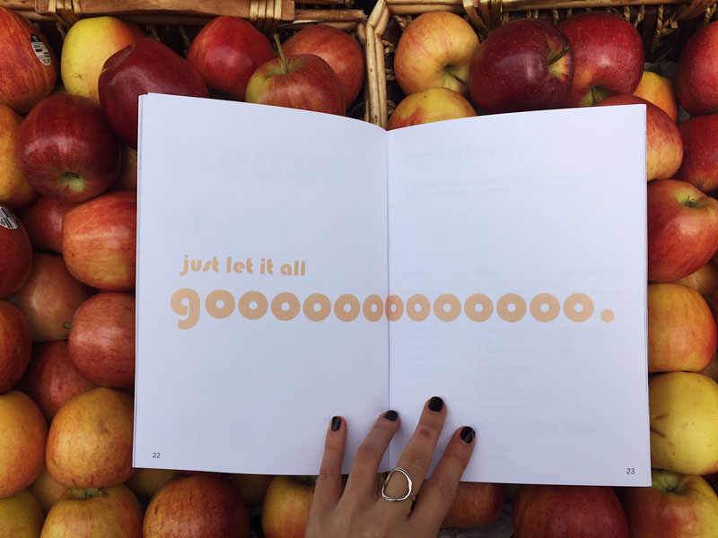Peace of Cake is a zine about bringing together the art of baking and the practice of mindfulness meditation. Baking has helped me find some inner peace and always relaxes me when I’m feeling stressed, anxious, or down. I want to share that feeling of tranquility with others who need it and who may not know how or where to find it.Really, Peace of Cake is for anyone and everyone. I want it to be available to people who are in search of finding clarity in their lives. That sounds intense, but at the end of the day, who doesn’t want clarity?
I like the idea of distributing copies very subtly. For example, maybe leaving a couple scattered on park benches or on subway seats. Kind of like hidden messages throughout New York City for strangers to come across. Ultimately, it will just be a one-time production, meaning there would be a limited amount in existence.
Peace of Cake acts to encourage the idea that mental health is an acceptable part of life to be open about, and more so, to be open about working on. It is to endorse the fact that everyone is working on themselves at all times. Baking is an alternative form of therapy, like exercising or painting, and has the ability to improve individuals’ general well-beings. Not only eating a pie, but making pie, can lift your spirits more than expected.
The overall visual design of Peace of Cake is a very open and airy layout – like the feeling of calmness or being zen. I have chosen a muted palette, with pastels mostly, to match the content matter. It is printed on plan on thicker paper and is bound with rubber bands. Peace of Cake includes a front and cover page, a masthead, an editor’s letter, a front matter article (Baked Goods and Some Words), a feature article (How to Make a Fruit Galette Without Losing your Shit), and a back matter article (Q&A with Leah Mizrachi).
Pure Noise
By Izzi Sneider


Pure Noise is a publication about the hardcore punk scene today. It is about the new music that is emerging across the country within the genre, and who the people making the music are. It is an ode to Punk fanzines from the 70s and 80s as an art that has lost traction in recent years due to the emergence of social media. This zine is for the old heads and the newbies looking to find new music and learn about the bands they like. You can pick up a new copy once a month at hardcore shows in NYC. Pure Noise values the DIY spirit of hardcore punk and celebrates the inclusiveness that punk is supposed to provide, it's merely about a shared love for our scene.
Hardcore is rough and grungy and the page design within the zine mimic that while still expressing the modernity of the scene today. That juxtaposition is seen within the design elements of the zine. It isn't meant to be precious or delicate. Tear out the pages, crumple it up in your back pocket, xerox it and send it to your friends in Minnesota, roll it up and whack people on the heads with it -- we don't care what you do with it.
Pure Noise issue #1 includes black and white photography by Izzi Sneider and Steven McDonald and an interview with Isaac Hale of Knocked Loose and AJ Gulnar of Discouraged.
Young Adults Who Travel
By Jade Connan
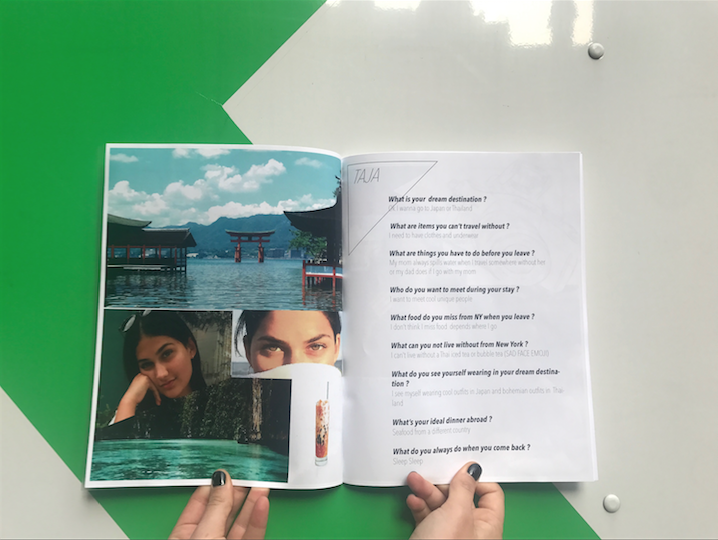 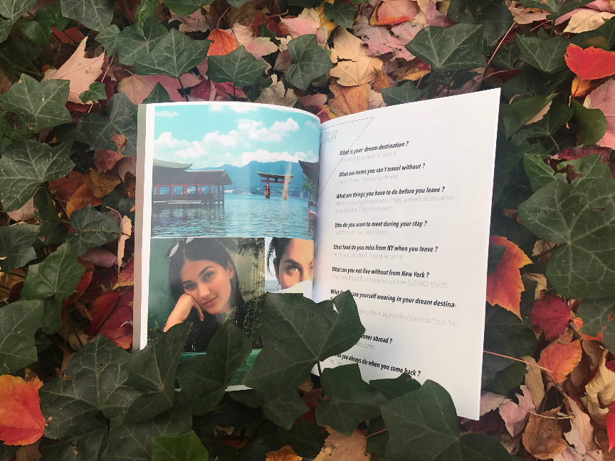 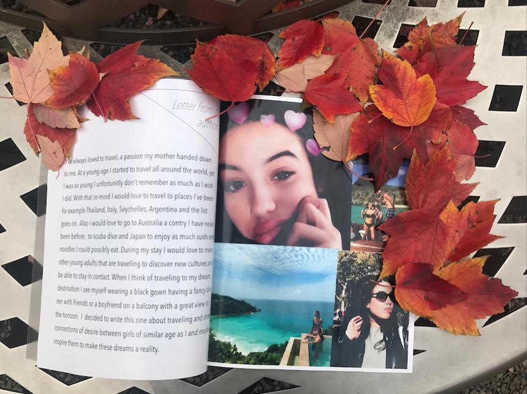Young Adults who travel for traveling sake is a zine about the concept of the voyage, from the departure to the new experience one endures to its return home. Some travel for work yet others do so to discover and enjoy new cultures, ways of living and food. Also the excitement of preparing for this vacation, packing searching up places to visit and the list goes on. With that in mind I decided to interview four of my closest friends for they as much as me adore the idea of leaving everything behind and taking the first flight out. These girls also enjoy esthetic foods, and places to visit which is a big reason why their dream destinations are all very similar. I would love to distribute it to young females that also enjoy the preparation of a voyage and would like to discover as many places in the world as they can. I would attach this zine to any Teen Vogue’s that are sent monthly, in airports or even distributed online.
I decided to write about traveling for it’s always related to a break from life, dreaming and during these last few months with midterms, finals us students have been under quite a lot of pressure yet I’ve realized that pressure and stress will follow us even after graduation and in our careers. I wanted readers to have a mental break while enjoying this zine, to forget about all their problems and start creating plans to escape their everyday lives. The colors that were used for the front and back covers were picked for it’s energy and happiness and represent. I wanted the zine to be visually pleasing but in the same time simple and not to complicated to look at. The collage of pictures was done so to create a connection between the reader and the girls that were interviewed and make a deeper mental picture.
Curl Pwr
By Julia Delisi
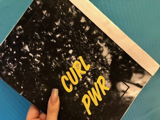 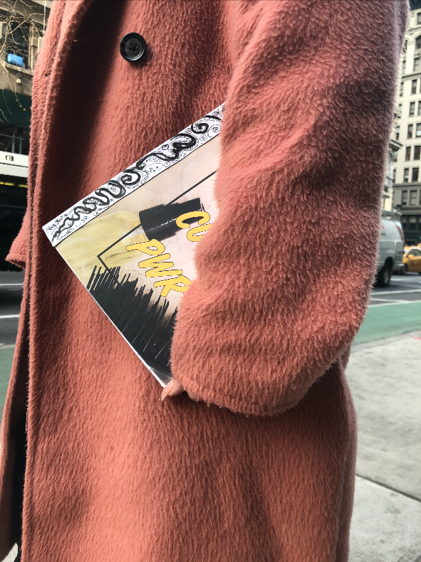 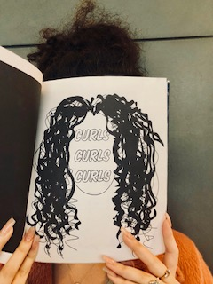Those with curly hair, whether it be people who choose to wear their hair natural, in protective styles, or those who are recovering from the harsh damage brought on by chemicals , sometimes need guidance and support from other fellow curly heads. It can be hard to choose be natural when everyone around you looks completely different, making you feel less confident and sometimes even ugly. This is where Curl Pwr steps in, It will explain the process and journey of being a natural in 2017, and how society effects this decision. This zine can and should be handed out at any time, but I want it to be a busy one, for example at a subway station after or before work, or plastered on a busy street like 5th avenue. The more people that see it the better, that way those who need it most will find it. Regardless of whether you have curly hair or not, the zine is informative and intimate and talks of deeper issues than just hair.
The articles will be centered around different people and their hair journey. Everyones relationship to their hair is so personal and unique, but some struggles are universal. Each person will give an intimate look at their relationship with their hair and how this is influenced by their upbringing and culture, as well as ways they’ve learned to tame and appreciate their natural texture. The zine also includes tips, a list of hair products to look into and each persons hair care routine. The reader should feel connected to the featured people, as well as learn new tips and tricks to help them along the way.
This zine aims to promote confidence, self love and healthy hair.
Dandelion
By Julianna Dunphy
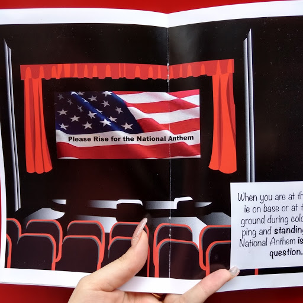 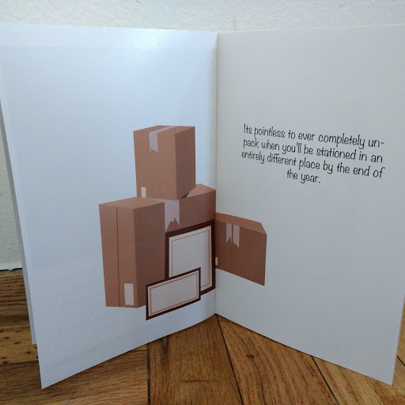 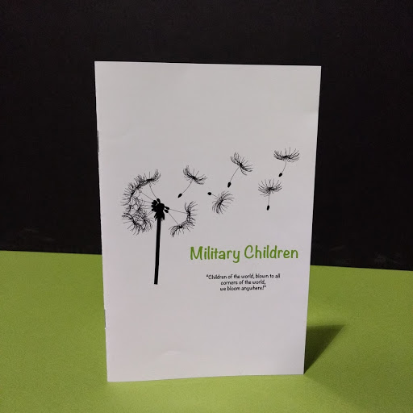My zine is a reflection on ideas, thoughts, and specific memories I’ve experienced as a military brat. Through children’s book type illustrations, the audience is able to see the sacrifices made by a child whose parent(s) serves in the military. My audience is The New School students who may or may not have any idea (nor might they care) about the United States military and the people who are first handedly involved. Monday morning in the University Center my zines will be laid out on the table in the lobby for anyone who wants to see. This reflection seems crucial for me to share being that you can’t expect people to understand if they genuinely are uninformed on the topic. With the political climate that is current within our country, the military seems to be disrespected more and more. All over the news we are hearing about athletes kneeling during the national anthem, people burning the American Flag, and more. Its for this reason that my eyes have been opened to the fact that, inevitably as a military brat, I look at the idea of America in a totally different way. Its also for this reason that I am curious for people to compare and maybe attempt to understand.
Since my zine is replicating a children’s book, I am using bright colors throughout. The font is “noteworthy” because of its girly playfulness but is still easy to read. My zine flip flops between a thought/idea and specific scenes/memories. To differentiate between the two there are a few characteristics for the spectator to view. My zine begins with a cover which is an illustration of a dandelion as well as the title. The dandelion is the flower “representing the military brat.” Then I have my editor’s letter. I then have a section that alternates between sharing a thought/idea and a specific memory/scene. And then lastly there is one overall message I want the reader to understand which is written out on the back cover. “Freedom isn’t free” is written across the back in the same design style as the front cover.
City Thrifty
By Katie Schmid
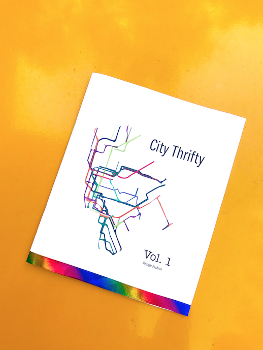 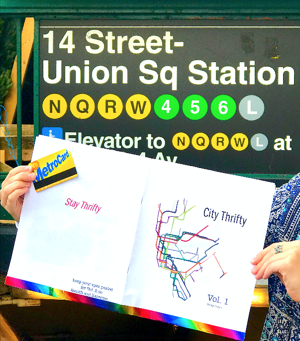My magazine, “City Thrifty”, is about ways to save money in the big apple coming from a small town girl, me. I specifically target audiences of ages ranging from high school to post graduate students, working young adults, basically anyone who wants to save money in NYC.
I plan to distribute “City Thrifty” on Friday around lunchtime at the cafeterias of New School, NYU and around union square. This way I can reach a whole bunch of students as well as young adults on break grabbing food, or friends of students. I want to distribute monthly editions.
The subjects will always revolve around normal activities, purchases or hobbies many young adults have, and how to continue them with a frugal approach. All the advice comes from a relatable source, who knows how to save money since I came from a small town in Missouri and have been purchase smart since a younging. I know all the secret shortcuts and I want to share those with others like me who don’t have the room to spend so much!
It is cute, funny and written with an easy, readable personality. I want to reach my audience from the same level they are on, not to talk down to them and make them feel inadequate. I am vulnerable, bearing my struggles, and showing how to persevere in the most expensive place to live in USA! I stayed with primary colors of red, blue, yellow and black to reflect the thrifty subway system of NYC.
I stayed with two types of font “typewriter” and “franklin gothic” that way I could have a clear hierarchy when alternating between the two fonts and size of font for each heading and subheading. I added a lot of white space to make the “guide” more clear and focused as well as adding homemade graphics of subway lines to carry the primary colors and thrifty theme throughout the article.
In light of staying “thrifty” , I wanted to bind and print the zine in the most inexpensive and practical way I could. I printed on normal, plain white paper and bound with two staples all by myself. To add a little bit of character, I taped my trademark primary color stripe rainbow band at the bottom. I think it would contradict my entire zine’s values if I spent a lot of money at a printing press to make my final zine. I want them to be distributed and disseminated just as cost conscious as the advice within!
A Guide of the Best Food in Philadelphia
By Logan Mahan


A Guide of the Best Food in Philadelphia is a zine of my favorite foods in Philly that I wanted to share with the world. The places featured in the zine are either foods I’ve grown up eating or places that have impacted me in some way. I chose six different places which cover six different foods: cheesesteaks, pizza, chinese, cannolis, convenience store snacks, and BBQ wings.
The name of the food place takes up one entire page, like it’s introducing itself. Each place has it’s own little section that includes its location and operating hours- and is also distinguished by a text color, and each place has its own color. I’ve included my own photographs and quotes I’ve read or overheard in the restaurant. I also included short paragraphs with descriptions of each place, why I love that place, what makes it so special, and my own personal history with it.
When thinking about distribution I had in mind Penn Station because people are always traveling to and from Philly. Although after sending my friends from home pictures of the finished booklet they all want copies for Christmas. The booklet is 8.5 x 5.5. I wanted the booklet to be small- just for my own aesthetic purposes, I think it looks cuter. Also for distribution purposes I imagine travelers being able to easily pick one up and not have it take up too much travel space. The zine is printed on a matte paper in the shade of ‘eggshell.’ I wanted matte paper so the booklet would have some sturdiness and I just really like matte texture. I had no strong connections to the shade eggshell prior to picking out the paper, I just knew I didn’t want crisp white (because it reminds me of computer paper) and I couldn’t have any distinct colors because my text is an array of colors. So eggshell looked fine.
On the opposite page of the letter from the editor, is a picture I took while driving of an part of the Philadelphia skyline up close while the sun was about to set- and the sky was pink and blue. The back page also features a photo of the skyline I took while at a Phillies game, but much farther away. You can only see the city's silhouette while the sun sets and the sky begins to darken around it.
Off The Record
By Nicole Lombrozo
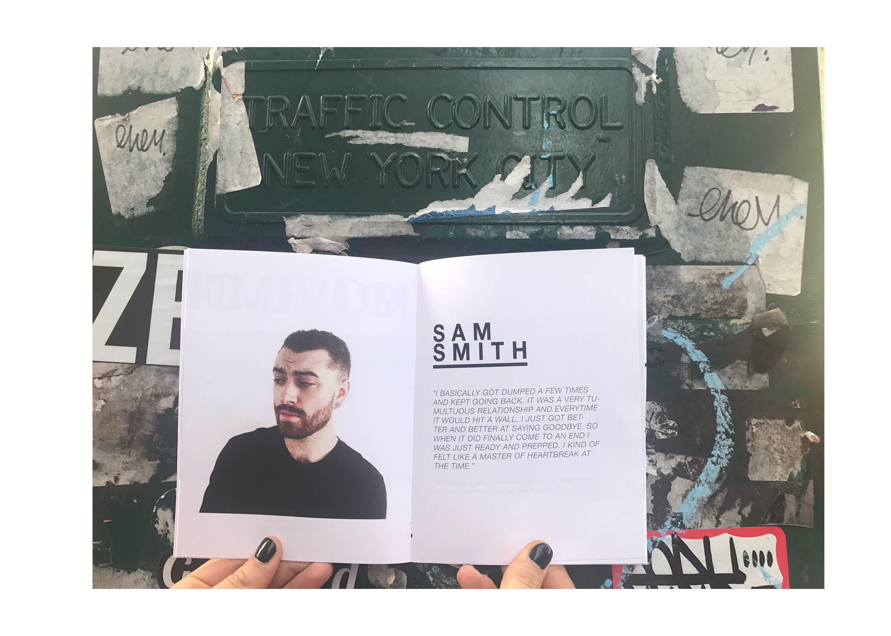Off The Record is a Zine that uncovers the emotional process that goes into writing a love song. More specifically, the experiences that an artist goes through and then packages up into a song to hand to their audience. Off The Record does not include singers who are not also songwriters, because the main focus is on the singers’ own experience and what they want their fans to learn from those experiences.
Stylistically, the zine features multiple artists and then either a long quote by them set in a article-style format, or a short quote that describes the inspiration for one of their songs that they are most famous for. The design of the zine is simple, and modern, but there is some color in the photographs that injects into the zine a sort of nostalgic feel due to their blurred nature(or my poor photoshopping skills). The cover and the back matter definitely demonstrate this old-timey quality as well. For the most part, the content consists of a picture of the artist and their name in a same font— Helvetica Neue— throughout. For the Sam Smith and Kendrick Lamar interviews, there is a second page in a article style format, as there was more content (also, doing just quotes seemed a little repetitive, so this was a nice break from that format).
For this issue, the quotes used were either found on Youtube or in magazines, but in the future, the quotes would idealistically be gathered from local singer/songwriters. (An idea I had would be to travel to each state in the U.S and interview musicians from the local music scenes).
Off The Record is created for the music nerds, the lovers, the dreamers, and pretty much anyone who feels compelled to grab a copy. They would be distributed in Union Sq, The Highline, or The New School lobby. Ideally, there would be four issues released per year.
Map to Chocolate
By Taylor Penn
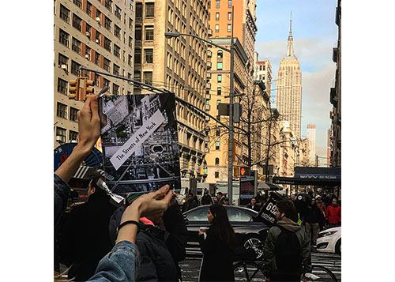 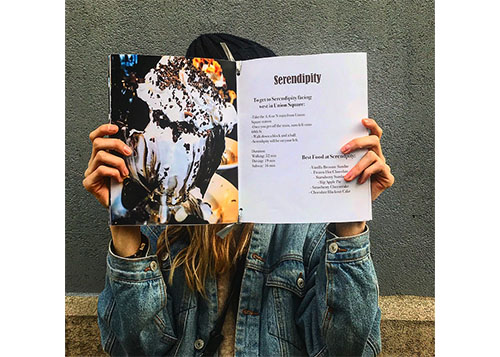 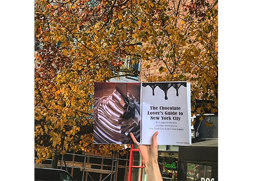The Streets of New York is a fun, collaborative magazine that comes out once a month exhibiting different activities for New Yorkers to do on their days off, relaxing in Union Square. When people read The Streets of New York they will see vibrant, images of the activities they can partake in and information on how to get to these locations from Union Square. Once they’ve finished the activity they can take the survey at the end of the article and send it in to The Streets of New York office giving feedback.
November’s edition, Map to Chocolate exhibits the best places to get chocolate in Manhattan. Map to Chocolate presents six restaurants in New York City: Magnolia Bakery, Max Brenner’s, Serendipity, Dylan’s Candy Bar, The Sugar Factory, and Bread’s Bakery. Each page exhibiting the restaurants are styled with images of what the specific restaurant is known for. The pages will give thorough directions on how to get to each restaurant from Union Square using the subway, walking, and driving. The magazine also has lists of other chocolate deserts available at these restaurants.
Map to Chocolate is meant to give people in New York, native or tourist a fun afternoon of adventure, and sweet encounters. The idea of The Streets of New York is to get a crowd of people who are constantly working, thinking, and rushing to part take in a mindless activity. It encourages readers to be adventurous and enjoy life.
Foul Plays
By Trudy Hall
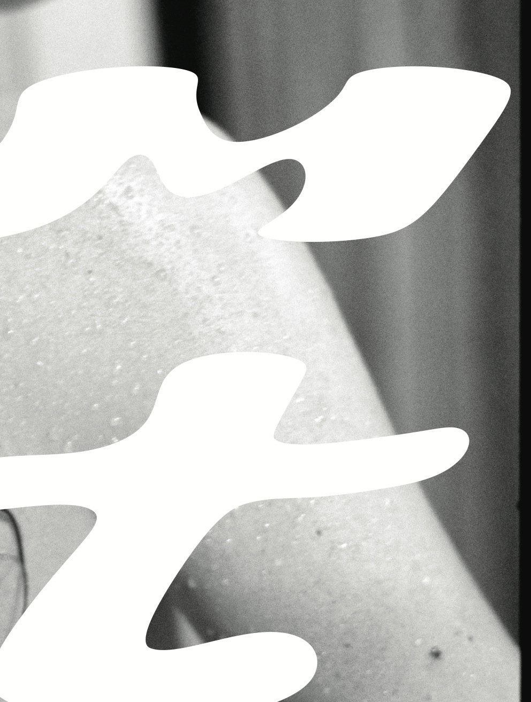 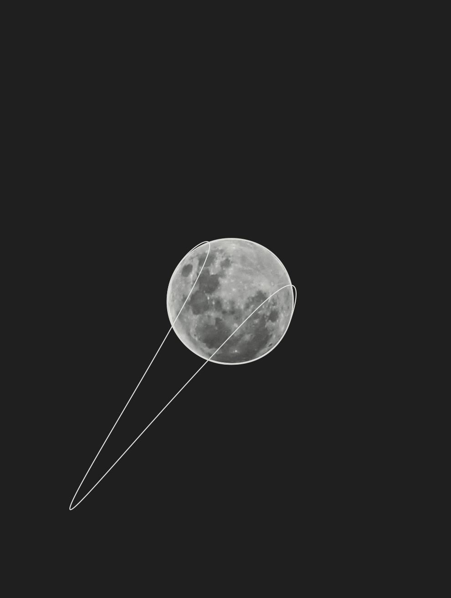 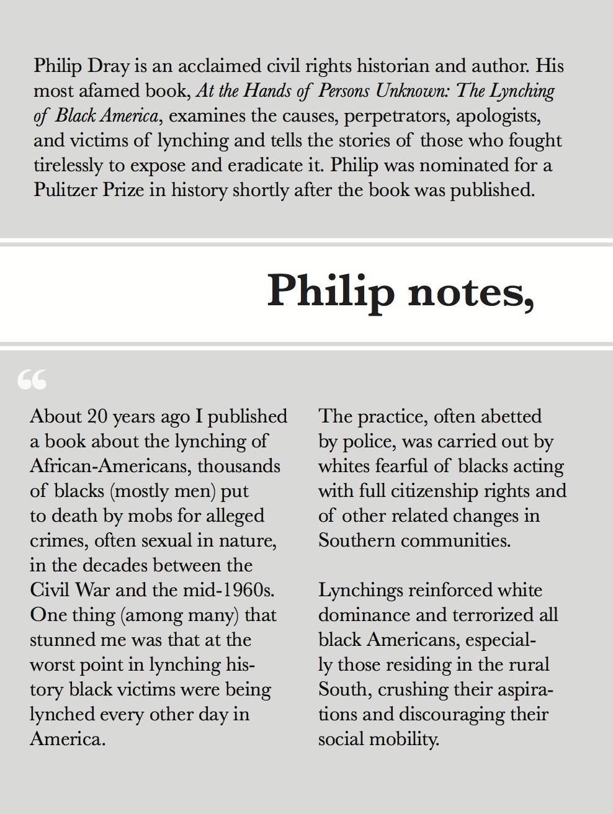The magazine, called Foul Plays, is a collection of “deja vus,” or commentaries on areas of history that have repeated themselves recently, paired with my own visuals (abstract illustrations/photographs).
The audience is anyone whose lap it may fall into. For example, rather than distributing it to a specific group of people, I’ll leave it in “rabbit holes,” poetic little corners throughout New York where it can be seen, picked up, and read, leaving a whimsical impression on the reader as a result. An example of a rabbit hole is a well-designed bench on Perry Street (I’m actually referring to a specific existing bench).
The frequency of distribution will follow the same lack of frequency in regards to the location (a new place every time), but it could be distributed at a consistent time; 7AM seems appropriate. I also played with the idea of leaving it at laundromats, as to reflect the circular nature of a washer/dryer (and appeal to people who are idling).
The values/personality is somewhat dark, abstract, alternative, informative (light-hearted at times, kind of...). Aesthetically, it’s pretty clean and organic. The subject matter is tethered to the color palette/fonts. By this, I mean that the subject matter quickly inspired the use of black/white/grey, not only to maintain consistency but also to denote the feeling of a “classic”, a book; I found that Serif fonts helped achieve this.
I didn’t exactly follow the anatomy structure, as it’s more of an anthology/collection than a traditional magazine with interviews. This choice definitely aided the consistency of the zine. One thing I made sure to maintain was primary sourcing. Everything in the zine is either made or sourced (via interviews) by me.
soap
By Yasmin Ahram
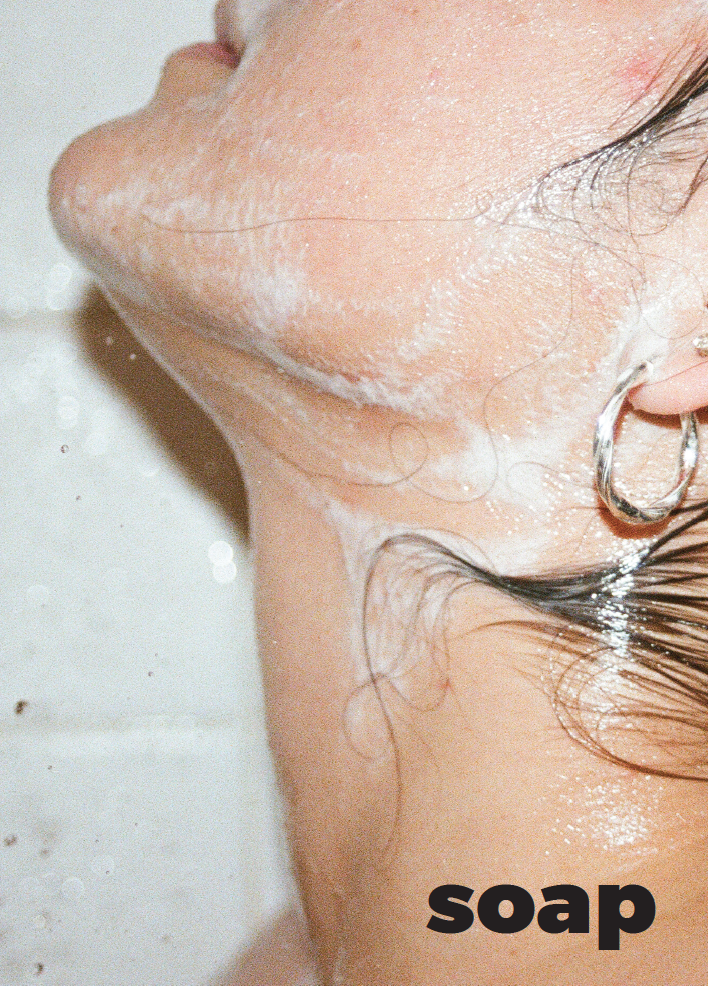 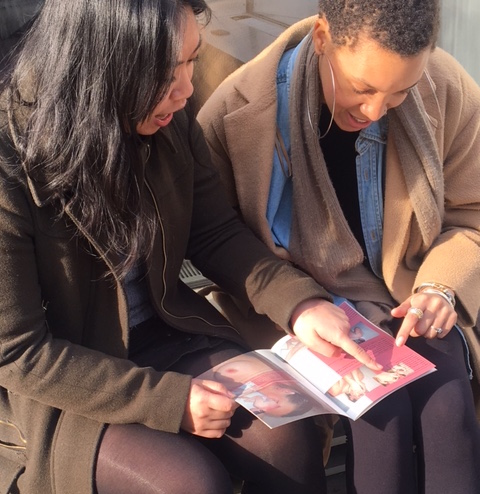 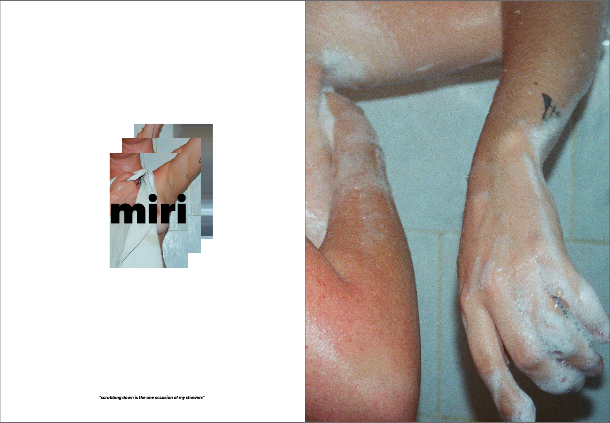soap is a zine that documents my friends’ showering routines through a series of photos and bits of conversation between us. showering is personally one of my favorite things to do and i’ve recently realized how specific and particular my routine is to my friends’. soap came about by wanting to highlight the discovery of our differences and similarities in showering, and embracing the unique quirks.
it’s about my friends, for my friends.
soap will be available for my friends to take a single copy each, once a month at one of our house parties. each issue will feature three different people every time and it is meant to feel like an exclusive piece of memorabilia for us to have about one another. it also encourages my friends to all gather once a month, hang out, laugh and leave with something special.
soap is an embodiment of our friendships and dynamics.
soap includes three of my friends. the front cover begins from the top [head] and the back cover ends with the bottom [toes]. inside is my editor’s letter and their three stories. no conventional masthead, everything is done by me and my friends know that. montserrat is used all throughout as the only type for a clean design and an easy read, as it isn’t copy heavy. unedited film photos superposed and laid out randomly within stories across spreads, to emphasize the raw aspect of naked bodies in that experience as well as the spontaneous and natural flow of the conversation. it follows a 12-column grid to allow for layout freedom, as within each story there is no timeline or order in which sections need to be read. the blocks of color were chosen to bring forth elements within the photographs that describe and emphasize their individual story and routine. printed on milkweed 32lb paper for a nice tint and texture, thick enough to sustain basic wear and tear, with a classic rubber band for binding. this allows for the zine to be taken apart, hung as individual posters and put back together.